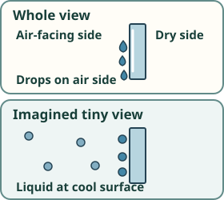

The cooled pane

In this made-up air, the pane becomes cool enough for some vapor to become liquid drops on its air-facing side. This is condensation. Water did not pass through the pane.
Imagined tiny view: Some of the same-size water-molecule dots sit close together in one small liquid sample at the cool surface. Other dots remain vapor in the air. No dot stands for one whole visible drop.
Compare the changes: Evaporation: liquid → invisible water vapor. Condensation: water vapor → liquid drops. In both, it is still water.
Talk together, if you like: Which side has drops, and where was that water just before? What does the tiny drawing show that your eyes could not see?
Compare with the evaporation visit
How this drawing works / sources
This is a teaching drawing, not an observation or experiment. Air conditions matter; not every cool pane develops drops.